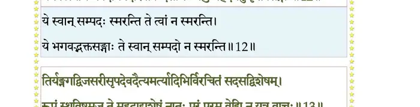
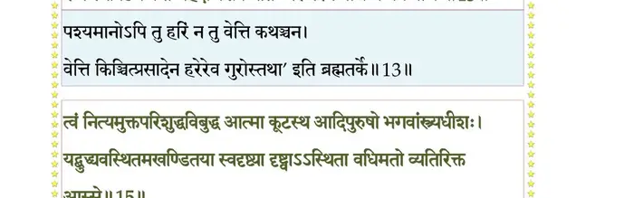
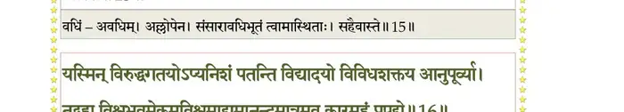
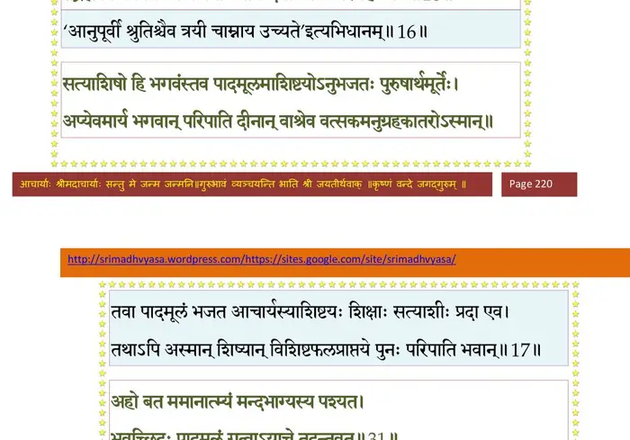
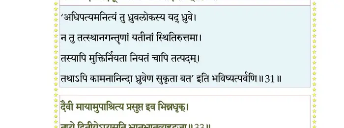
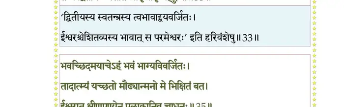
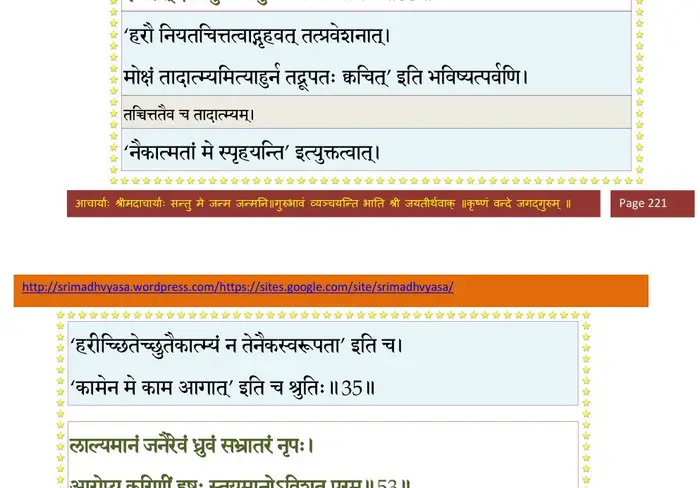
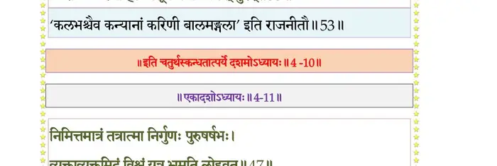

स्कन्ध 4 · अध्याय 10
श्लोक १
मैत्रेय उवाच–
त एवमुत्सन्नभया उरुक्रमे कृतप्रणामाः प्रययुस्त्रिविष्टपम् ।
सहस्रशीर्षाऽपि ततो गरुत्मता मधोर्वनं भृत्यदिदृक्षया गतः।। १ ।।
त एवमुत्सन्नभया उरुक्रमे कृतप्रणामाः प्रययुस्त्रिविष्टपम् ।
सहस्रशीर्षाऽपि ततो गरुत्मता मधोर्वनं भृत्यदिदृक्षया गतः।। १ ।।
श्लोक २
स वै धिया योगविपाकतीव्रया हृत्पद्मकोशे स्फुरितं तडित्प्रभम् ।
तिरोहितं सहसैवोपलक्ष्य बहिः स्थितं तदवस्थं ददर्श।। २ ।।
तिरोहितं सहसैवोपलक्ष्य बहिः स्थितं तदवस्थं ददर्श।। २ ।।
श्लोक ३
तद्दर्शनेनागतसाध्वसः क्षिताववन्दताङ्गं विनिमय्य दण्डवत् ।
दृग्भ्यां प्रपश्यन् प्रपिबन्निवार्भकश्चुम्बन्निवास्येन भुजेन चाश्लिषन्।। ३ ।।
दृग्भ्यां प्रपश्यन् प्रपिबन्निवार्भकश्चुम्बन्निवास्येन भुजेन चाश्लिषन्।। ३ ।।
श्लोक ४
स तं विवक्षन्तमतद्विदं हरिर्ज्ञात्वाऽस्य सर्वस्य च हृद्यवस्थितः ।
कृताञ्जलिं ब्रह्ममयेन कम्बुना पस्पर्श बालं कृपया कपोले।। ४ ।।
कृताञ्जलिं ब्रह्ममयेन कम्बुना पस्पर्श बालं कृपया कपोले।। ४ ।।
श्लोक ५
स वै तदैव प्रतिपद्य तां गिरं दैवीं परिज्ञातपरात्मनिर्णयः ।
तद्भक्तिभावोऽभ्यगृणादसत्वरं परिश्रितोरुश्रवसं ध्रुवक्षितिम्।। ५ ।।
तद्भक्तिभावोऽभ्यगृणादसत्वरं परिश्रितोरुश्रवसं ध्रुवक्षितिम्।। ५ ।।
श्लोक ६
ध्रुव उवाच–
योऽन्तः प्रविश्य मम वाचमिमां प्रसुप्तां
संजीवयत्यखिलशक्तिधरः स्वधाम्ना ।
अन्यांश्च हस्तचरणश्रवणत्वगादीन्
प्राणान् नमो भगवते पुरुषाय तुभ्यम्।। ६ ।।
योऽन्तः प्रविश्य मम वाचमिमां प्रसुप्तां
संजीवयत्यखिलशक्तिधरः स्वधाम्ना ।
अन्यांश्च हस्तचरणश्रवणत्वगादीन्
प्राणान् नमो भगवते पुरुषाय तुभ्यम्।। ६ ।।
श्लोक ७
एकस्त्वमेव भगवन्निदमात्मशक्त्या
मायाख्ययोरुगुणया महदाद्यशेषम् ।
सृष्ट्वाऽनुविश्य पुरुषस्तदसद्गुणेषु
नानेव दारुषु विभावसुवद् विभासि।। ७ ।।
मायाख्ययोरुगुणया महदाद्यशेषम् ।
सृष्ट्वाऽनुविश्य पुरुषस्तदसद्गुणेषु
नानेव दारुषु विभावसुवद् विभासि।। ७ ।।
श्लोक ८
त्वद्दत्तया वयुनयेदमचष्ट विश्वं
सुप्तः प्रबुद्ध इव नाथ भवत्प्रपन्नः ।
तस्यापवर्ग्यशरणं तव पादमूलं
विस्मर्यते कृतधिया कथमार्तबन्धो।। ८ ।।
सुप्तः प्रबुद्ध इव नाथ भवत्प्रपन्नः ।
तस्यापवर्ग्यशरणं तव पादमूलं
विस्मर्यते कृतधिया कथमार्तबन्धो।। ८ ।।
श्लोक ९
नूनं विमुष्टमतयस्तव मायया ते
ये त्वां भवाप्ययविमोक्षणमन्यहेतोः ।
अर्चन्ति कल्पकतरुं कुणपोपभोग्यम्
इच्छन्ति यत् स्पर्शजं निरयेऽपि नॄणाम्।। ९ ।।
ये त्वां भवाप्ययविमोक्षणमन्यहेतोः ।
अर्चन्ति कल्पकतरुं कुणपोपभोग्यम्
इच्छन्ति यत् स्पर्शजं निरयेऽपि नॄणाम्।। ९ ।।
श्लोक १०
या निर्वृतिस्तनुभृतां तव पादपद्म-
ध्यानाद् भवज्जनकथाश्रवणेन वा स्यात् ।
सा ब्रह्मणि स्वमहिमन्यपि नाथ मा भूत्
किम्वन्तकासिलुलितात् पततां विमानात्।। १० ।।
ध्यानाद् भवज्जनकथाश्रवणेन वा स्यात् ।
सा ब्रह्मणि स्वमहिमन्यपि नाथ मा भूत्
किम्वन्तकासिलुलितात् पततां विमानात्।। १० ।।
श्लोक ११
भक्तिं मुहुः प्रवहतां त्वयि मे प्रसङ्गो
भूयादनन्त महताममलाशयानाम् ।
येनाञ्जसोल्बणमुरुव्यसनं भवाब्धिं
नेष्ये भवद्गुणकथामृतपानमत्तः।। ११ ।।
भूयादनन्त महताममलाशयानाम् ।
येनाञ्जसोल्बणमुरुव्यसनं भवाब्धिं
नेष्ये भवद्गुणकथामृतपानमत्तः।। ११ ।।
श्लोक १२
ते न स्मरन्त्यतितरां प्रियमीशमाद्यं
स्वान् सम्पदः सुतसुहृद्गृहवित्तदारान् ।
ये त्वब्जनाभभवदीयपदारविन्द-
सौगन्ध्यलुब्धहृदयेषु कृतप्रसङ्गाः।। १२ ।।
स्वान् सम्पदः सुतसुहृद्गृहवित्तदारान् ।
ये त्वब्जनाभभवदीयपदारविन्द-
सौगन्ध्यलुब्धहृदयेषु कृतप्रसङ्गाः।। १२ ।।
भागवततात्पर्यनिर्णय

श्लोक १३
तिर्यङ्नगद्विजसरीसृपदेवदैत्य-
मर्त्यादिभिर्विरचितं सदसद्विशेषम् ।
रूपं स्थविष्ठमज ते महदाद्यशेषं
नातः परं परम वेद्मि न यत्र वाचः।। १३ ।।
मर्त्यादिभिर्विरचितं सदसद्विशेषम् ।
रूपं स्थविष्ठमज ते महदाद्यशेषं
नातः परं परम वेद्मि न यत्र वाचः।। १३ ।।
भागवततात्पर्यनिर्णय

श्लोक १४
कल्पान्त एतदखिलं जठरेण गृह्णन् ।
शेते पुमान् स्वदृगनन्तसखस्तदङ्के ।
यन्नाभिसिन्धुरुहकाञ्चनलोकपद्म-
गर्भे द्युमान् भगवते प्रणतोऽस्मि तस्मै।। १४ ।।
शेते पुमान् स्वदृगनन्तसखस्तदङ्के ।
यन्नाभिसिन्धुरुहकाञ्चनलोकपद्म-
गर्भे द्युमान् भगवते प्रणतोऽस्मि तस्मै।। १४ ।।
श्लोक १५
त्वं नित्यमुक्तपरिशुद्धविशुद्ध आत्मा
कूटस्थ आदिपुरुषो भगवांस्त्र्यधीशः ।
ये बुध्द्यवस्थितमखण्डितया स्वबुद्ध्या
दृष्ट्वा स्थिता वधिमतो व्यतिरिक्त आस्से।। १५ ।।
कूटस्थ आदिपुरुषो भगवांस्त्र्यधीशः ।
ये बुध्द्यवस्थितमखण्डितया स्वबुद्ध्या
दृष्ट्वा स्थिता वधिमतो व्यतिरिक्त आस्से।। १५ ।।
भागवततात्पर्यनिर्णय

श्लोक १६
यस्मिन् विरुद्धगतयोऽप्यनिशं पतन्ति
विद्यादयो विविधशक्तय आनुपूर्व्या ।
तद् ब्रह्म विश्वभवमेकमविश्वमाद्य-
मानन्दमात्रमविकारमहं प्रपद्ये।। १६ ।।
विद्यादयो विविधशक्तय आनुपूर्व्या ।
तद् ब्रह्म विश्वभवमेकमविश्वमाद्य-
मानन्दमात्रमविकारमहं प्रपद्ये।। १६ ।।
भागवततात्पर्यनिर्णय

श्लोक १७
सत्याशिषो हि भगवंस्तव पादमूल-
माशिष्टयोऽनुभजतः पुरुषार्थमूर्तेः ।
अप्येवमार्य भगवान् परिपाति दीनान्
वास्रेव वत्सकमनुग्रहकातरोऽस्मान्।। १७ ।।
माशिष्टयोऽनुभजतः पुरुषार्थमूर्तेः ।
अप्येवमार्य भगवान् परिपाति दीनान्
वास्रेव वत्सकमनुग्रहकातरोऽस्मान्।। १७ ।।
श्लोक १८
मैत्रेय उवाच–
अथाभिष्टुत एवं वै सत्सङ्कल्पेन धीमता ।
भृत्यानुरक्तो भगवान् प्रतिनन्द्येदमब्रवीत्।। १८ ।।
अथाभिष्टुत एवं वै सत्सङ्कल्पेन धीमता ।
भृत्यानुरक्तो भगवान् प्रतिनन्द्येदमब्रवीत्।। १८ ।।
श्लोक १९
श्रीभगवानुवाच–
वेदाऽहं ते व्यवसितं हृदि राजन्यबालक ।
तत् प्रयच्छामि भद्रं ते दुरापमपि भूयसाम्।। १९ ।।
वेदाऽहं ते व्यवसितं हृदि राजन्यबालक ।
तत् प्रयच्छामि भद्रं ते दुरापमपि भूयसाम्।। १९ ।।
श्लोक २०
नान्यैरधिष्ठितं भद्र यद् भ्राजिष्णु ध्रुवक्षिति ।
यत्र ग्रहर्क्षताराणां ज्योतिषां चक्रमाहितम्।। २० ।।
यत्र ग्रहर्क्षताराणां ज्योतिषां चक्रमाहितम्।। २० ।।
श्लोक २१
मेढ्यां गोचक्रवत् स्थास्नु उदस्तात् कल्पवासिनाम् ।
धर्मोऽग्निः कश्यपः शक्रो मुनयो ये वनौकसः ।
चरन्ति दक्षिणीकृत्य भ्रमन्तो यत्सतारकाः।। २१ ।।
धर्मोऽग्निः कश्यपः शक्रो मुनयो ये वनौकसः ।
चरन्ति दक्षिणीकृत्य भ्रमन्तो यत्सतारकाः।। २१ ।।
श्लोक २२
प्रस्थिते तु वनं पित्रा दत्तां गां धर्मसंश्रयः ।
षट्त्रिंशद्वर्षसाहस्रं रक्षिताऽव्याहतेन्द्रियः।। २२ ।।
षट्त्रिंशद्वर्षसाहस्रं रक्षिताऽव्याहतेन्द्रियः।। २२ ।।
श्लोक २३
त्वद्भ्रातर्युत्तमे नष्टे मृगयायां तु तन्मनाः ।
अन्वेषती वनं माता दावाग्निं सा प्रवेक्ष्यति।। २३ ।।
अन्वेषती वनं माता दावाग्निं सा प्रवेक्ष्यति।। २३ ।।
श्लोक २४
इष्ट्वा मां यज्ञहृदयं यज्ञैः पुष्कलदक्षिणैः ।
भुक्त्वा चेहाशिषः सत्या अन्ते माऽनुस्मरिष्यसि।। २४ ।।
भुक्त्वा चेहाशिषः सत्या अन्ते माऽनुस्मरिष्यसि।। २४ ।।
श्लोक २५
ततो गन्ताऽसि मत्स्थानं सर्वलोकनमस्कृतम् ।
उपरिष्टाद् ऋषिभ्यस्त्वं यतो नावर्तते यतिः।। २५ ।।
उपरिष्टाद् ऋषिभ्यस्त्वं यतो नावर्तते यतिः।। २५ ।।
श्लोक २६
मैत्रेय उवाच–
इत्यर्चितः स भगवानतिसृज्यात्मनः पदम् ।
बालस्य पश्यतो धाम जगाम गरुडध्वजः।। २६ ।।
इत्यर्चितः स भगवानतिसृज्यात्मनः पदम् ।
बालस्य पश्यतो धाम जगाम गरुडध्वजः।। २६ ।।
श्लोक २७
सोऽपि सङ्कल्पजं विष्णोः पादसेवोपसादितम् ।
प्राप्य सङ्कल्पनिर्वाणं नातिप्रीतोऽभ्यगात् पुरम्।। २७ ।।
प्राप्य सङ्कल्पनिर्वाणं नातिप्रीतोऽभ्यगात् पुरम्।। २७ ।।
श्लोक २८
विदुर उवाच –
सुदुर्लभं यत् परमं पदं हरेर्मायाविनस्तच्चरणार्चनार्जितम् ।
लब्ध्वाऽप्यसिद्धार्थमिवैकजन्मना कथं स्वमात्मानममन्यतार्थवित् ।। २८ ।।
सुदुर्लभं यत् परमं पदं हरेर्मायाविनस्तच्चरणार्चनार्जितम् ।
लब्ध्वाऽप्यसिद्धार्थमिवैकजन्मना कथं स्वमात्मानममन्यतार्थवित् ।। २८ ।।
श्लोक २९
मैत्रेय उवाच–
मातुः सपत्न्या वाग्बाणैर्हृदि विद्धस्तु तान् स्मरन् ।
नैच्छन्मुक्तिपतेर्मुक्तिं तस्मात् तापमुपेयिवान्।। २९ ।।
मातुः सपत्न्या वाग्बाणैर्हृदि विद्धस्तु तान् स्मरन् ।
नैच्छन्मुक्तिपतेर्मुक्तिं तस्मात् तापमुपेयिवान्।। २९ ।।
श्लोक ३०
ध्रुव उवाच–
समाधिनाऽनेकभवेन यत्पदं विदुः सनन्दादय ऊर्ध्वरेतसः ।
मासैरहं षड्भिरमुष्य पादयोश्छायामुपेत्यापहतः पृथङ्मतिः।। ३० ।।
समाधिनाऽनेकभवेन यत्पदं विदुः सनन्दादय ऊर्ध्वरेतसः ।
मासैरहं षड्भिरमुष्य पादयोश्छायामुपेत्यापहतः पृथङ्मतिः।। ३० ।।
श्लोक ३१
अहो बत ममानात्म्यं मन्दभाग्यस्य पश्यत ।
भवच्छिदः पादमूलं गत्वा याचे तदन्तवत्।। ३१ ।।
भवच्छिदः पादमूलं गत्वा याचे तदन्तवत्।। ३१ ।।
भागवततात्पर्यनिर्णय

श्लोक ३२
मतिर्विदूषिता देवैर्यतद्भिरसहिष्णुभिः ।
यो नारदवचस्तथ्यं नाग्रहीषमसत्तमः।। ३२ ।।
यो नारदवचस्तथ्यं नाग्रहीषमसत्तमः।। ३२ ।।
श्लोक ३३
दैवीं मायामुपाश्रित्य प्रसुप्त इव भिन्नदृक् ।
तप्ये द्वितीयेऽप्यसति भ्रातृभ्रातृव्यहृद्रुजा।। ३३ ।।
तप्ये द्वितीयेऽप्यसति भ्रातृभ्रातृव्यहृद्रुजा।। ३३ ।।
भागवततात्पर्यनिर्णय

श्लोक ३४
मयैतत् प्रार्थितं व्यर्थं चिकित्सेव गतायुषि ।
प्रसाद्य जगदात्मानं तपसा दुष्प्रसादनम्।। ३४ ।।
प्रसाद्य जगदात्मानं तपसा दुष्प्रसादनम्।। ३४ ।।
श्लोक ३५
भवच्छिदमयाचेऽहं भवं भाग्यविवर्जितः ।
तादात्म्यं यच्छतो मौढ्यान्मानो मे भिक्षितं बत
ईश्वरात् क्षीणपुण्येन पुलकानिव चाधनः।। ३५ ।।
तादात्म्यं यच्छतो मौढ्यान्मानो मे भिक्षितं बत
ईश्वरात् क्षीणपुण्येन पुलकानिव चाधनः।। ३५ ।।
भागवततात्पर्यनिर्णय

श्लोक ३६
मैत्रेय उवाच–
न वै मुकुन्दस्य पदारविन्दयो रजोजुषस्तात भवादृशा जनाः ।
वाञ्छन्ति तद्दास्यमृतेऽर्थमात्मनो यदृच्छया लब्धमनः समृद्धयः।। ३६ ।।
न वै मुकुन्दस्य पदारविन्दयो रजोजुषस्तात भवादृशा जनाः ।
वाञ्छन्ति तद्दास्यमृतेऽर्थमात्मनो यदृच्छया लब्धमनः समृद्धयः।। ३६ ।।
श्लोक ३७
आकर्ण्यात्मजमायान्तं सम्परेत्य यथागतम् ।
राजा न श्रद्दधे भद्रमभद्रस्य कुतो मम।। ३७ ।।
राजा न श्रद्दधे भद्रमभद्रस्य कुतो मम।। ३७ ।।
श्लोक ३८
श्रद्धाय वाक्यं देवर्षेर्हर्षवेगेन धर्षितः ।
वार्ताहर्तुरतिप्रीतो हारं प्रादान्महाधनम्।। ३८ ।।
वार्ताहर्तुरतिप्रीतो हारं प्रादान्महाधनम्।। ३८ ।।
श्लोक ३९
सदश्वं रथमारुह्य कार्तस्वरपरिष्कृतम् ।
ब्राह्मणैः कुलवृद्धैश्च पर्यस्तोऽमात्यबन्धुभिः।। ३९ ।।
ब्राह्मणैः कुलवृद्धैश्च पर्यस्तोऽमात्यबन्धुभिः।। ३९ ।।
श्लोक ४०
शङ्खदुन्दुभिनादेन ब्रह्मघोषेण वेणुभिः ।
निश्चक्राम पुरात् तूर्णमात्मजाभीक्षणोत्सुकः।। ४० ।।
निश्चक्राम पुरात् तूर्णमात्मजाभीक्षणोत्सुकः।। ४० ।।
श्लोक ४१
सुनीतिः सुरुचिश्चास्य महिष्यौ रुक्मभूषिते ।
आरुह्य शिबिके सार्धमुत्तमेनाभिजग्मतुः।। ४१ ।।
आरुह्य शिबिके सार्धमुत्तमेनाभिजग्मतुः।। ४१ ।।
श्लोक ४२
तं दृष्ट्वोपवनाभ्याश आयान्तं तरसा रथात् ।
अवरुह्य नृपस्तूर्णमासाद्य प्रेमविह्वलः।। ४२ ।।
अवरुह्य नृपस्तूर्णमासाद्य प्रेमविह्वलः।। ४२ ।।
श्लोक ४३
परिरेभेऽङ्गजं दोर्भ्यां दीर्घोत्कण्ठमनाः श्वसन् ।
विष्वक्सेनाङ्घ्रिसंस्पर्शहताशेषाघबन्धनम्।। ४३ ।।
विष्वक्सेनाङ्घ्रिसंस्पर्शहताशेषाघबन्धनम्।। ४३ ।।
श्लोक ४४
अथाजिघ्रन्मुहुर्मूघर्ि्न शान्तैर्नयनवारिभिः ।
स्नापयामास तनयमाप्तोद्दाममनोरथम्।। ४४ ।।
स्नापयामास तनयमाप्तोद्दाममनोरथम्।। ४४ ।।
श्लोक ४५
अभिवन्द्य पितुः पादावाशीर्भिश्चानुमन्त्रितः ।
ननाम मातरौ शीर्ष्णा सत्कृतः सज्जनाग्रणीः।। ४५ ।।
ननाम मातरौ शीर्ष्णा सत्कृतः सज्जनाग्रणीः।। ४५ ।।
श्लोक ४६
सुरुचिस्तं समुत्थाप्य पादावनतमर्भकम् ।
परिष्वज्याह जीवेति बाष्पगद्गदया गिरा।। ४६ ।।
परिष्वज्याह जीवेति बाष्पगद्गदया गिरा।। ४६ ।।
श्लोक ४७
यस्य प्रसन्नो भगवान् गुणैर्मैत्र्यादिभिर्हरिः ।
तस्मै नमन्ति भूतानि निम्नामाप इव स्वयम्।। ४७ ।।
तस्मै नमन्ति भूतानि निम्नामाप इव स्वयम्।। ४७ ।।
श्लोक ४८
उत्तमश्च ध्रुवश्चोभावन्योन्यं प्रेमविह्वलौ ।
अङ्गसङ्गादुत्पुलकावस्रौघं मुहुरूहतुः।। ४८ ।।
अङ्गसङ्गादुत्पुलकावस्रौघं मुहुरूहतुः।। ४८ ।।
श्लोक ४९
सुनीतिरस्य जननी प्राणेभ्योऽपि प्रियं सुतम् ।
उपगुह्य जहावाधिं यदङ्गस्पर्शनिर्वृता।। ४९ ।।
उपगुह्य जहावाधिं यदङ्गस्पर्शनिर्वृता।। ४९ ।।
श्लोक ५०
पयः स्तनाभ्यां सुस्राव नेत्रजैः सलिलैः शिवैः ।
तदाऽभिषिच्यमानाया वीरे वीरसुवो मुहुः।। ५० ।।
तदाऽभिषिच्यमानाया वीरे वीरसुवो मुहुः।। ५० ।।
श्लोक ५१
तां शशंसुर्जना राज्ञीं दिष्ट्या ते पुत्र आर्तिहा ।
प्रतिलब्धश्चिरं नष्टो रक्षिता मण्डलं भुवः।। ५१ ।।
प्रतिलब्धश्चिरं नष्टो रक्षिता मण्डलं भुवः।। ५१ ।।
श्लोक ५२
अभ्यर्चितस्त्वया नूनं भगवान् प्रणतार्तिहा ।
यदनुध्यायिनो धीरा मृत्युं जिग्युः सुदुर्जयम्।। ५२ ।।
यदनुध्यायिनो धीरा मृत्युं जिग्युः सुदुर्जयम्।। ५२ ।।
श्लोक ५३
लाल्यमानं जनैरेवं ध्रुवं सभ्रातरं नृपः ।
आरोप्य करिणीं हृष्टः स्तूयमानोऽविशत् पुरम्।। ५३ ।।
आरोप्य करिणीं हृष्टः स्तूयमानोऽविशत् पुरम्।। ५३ ।।
भागवततात्पर्यनिर्णय

श्लोक ५४
तत्र तत्रोपसङ्क्लृप्तैर्लसन्मकरतोरणैः ।
संवृतैः कदलीस्तम्भैः पूगपोतैश्च तद्विधैः।। ५४ ।।
संवृतैः कदलीस्तम्भैः पूगपोतैश्च तद्विधैः।। ५४ ।।
श्लोक ५५
चूतपल्लववासःस्रङ्मुक्तादामविलम्बिभिः ।
उपस्कृतं प्रतिद्वारमपां कुम्भैः सदीपकैः।। ५५ ।।
उपस्कृतं प्रतिद्वारमपां कुम्भैः सदीपकैः।। ५५ ।।
श्लोक ५६
प्राकारैर्गोपुराट्टालैः शातकुम्भपरिच्छदैः ।
सर्वतोऽलङ्कृतं श्रीमद्विमानशिखरद्युभिः।। ५६ ।।
सर्वतोऽलङ्कृतं श्रीमद्विमानशिखरद्युभिः।। ५६ ।।
श्लोक ५७
मृष्टचत्वररथ्यादिमार्गं चन्दनचर्चितम् ।
लाजाक्षतैः पुष्पफलैस्तन्दुलैर्बलिभिर्युतम्।। ५७ ।।
लाजाक्षतैः पुष्पफलैस्तन्दुलैर्बलिभिर्युतम्।। ५७ ।।
श्लोक ५८
ध्रुवाय पथि दृष्टाय तत्र तत्र पुरस्त्रियः ।
सिद्धार्थाक्षतदध्यम्बुदूर्वापुष्पफलानि च।। ५८ ।।
सिद्धार्थाक्षतदध्यम्बुदूर्वापुष्पफलानि च।। ५८ ।।
श्लोक ५९
उपजह्रुः प्रयुञ्जाना वात्सल्यादाशिषः सतीः ।
शृण्वंस्तु वल्गुगीतानि प्राविशद् भवनं पितुः।। ५९ ।।
शृण्वंस्तु वल्गुगीतानि प्राविशद् भवनं पितुः।। ५९ ।।
श्लोक ६०
महामणिव्रातमये स तस्मिन् कशिपूत्तमे ।
लालितो नितरां पित्रा न्यवसद् दिवि देववत्।। ६० ।।
लालितो नितरां पित्रा न्यवसद् दिवि देववत्।। ६० ।।
श्लोक ६१
पयः फेननिभाः शय्या दान्ता रुक्मपरिच्छदाः ।
आसनानि महार्हाणि यत्र रौक्मा उपस्कराः।। ६१ ।।
आसनानि महार्हाणि यत्र रौक्मा उपस्कराः।। ६१ ।।
श्लोक ६२
यत्र स्फटिककुड्येषु महामारकतेषु च ।
मणिप्रदीपा आभान्ति ललनारत्नसंयुताः।। ६२ ।।
मणिप्रदीपा आभान्ति ललनारत्नसंयुताः।। ६२ ।।
श्लोक ६३
उद्यानानि च रम्याणि विचित्रैरमरद्रुमैः ।
कूजद्विहङ्गमिथुनैर्गायन्मत्तमधुव्रतैः।। ६३ ।।
कूजद्विहङ्गमिथुनैर्गायन्मत्तमधुव्रतैः।। ६३ ।।
श्लोक ६४
वाप्यो वैदूर्यसोपानाः पद्मोत्पलकुमुद्वतीः ।
हंसकारण्डबकुलैर्जुष्टाश्चक्राह्वसारसैः।। ६४ ।।
हंसकारण्डबकुलैर्जुष्टाश्चक्राह्वसारसैः।। ६४ ।।
श्लोक ६५
उत्तानपादो राजर्षिः प्रभावं तनयस्य तम् ।
श्रुत्वा दृष्ट्वाऽद्भुततमं प्रपेदे विस्मयं परम्।। ६५ ।।
श्रुत्वा दृष्ट्वाऽद्भुततमं प्रपेदे विस्मयं परम्।। ६५ ।।
श्लोक ६६
वीक्ष्योढवयसं पुत्रं प्रकृतीनां च संमतम् ।
अनुरक्तप्रजं राजा ध्रुवं चक्रे भुवः पतिम्।। ६६ ।।
अनुरक्तप्रजं राजा ध्रुवं चक्रे भुवः पतिम्।। ६६ ।।
श्लोक ६७
आत्मानं च प्रवयसमाकलय्य विशां पतिः ।
वनं विरक्तः प्रातिष्ठत् विमृशन्नात्मनो गतिम्।। ६७ ।।
वनं विरक्तः प्रातिष्ठत् विमृशन्नात्मनो गतिम्।। ६७ ।।
।। इति श्रीमद्भागवते चतुर्थस्कन्धे दशमोऽध्यायः ।।